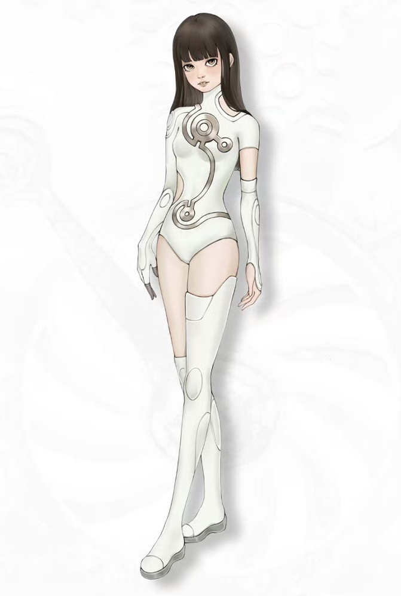
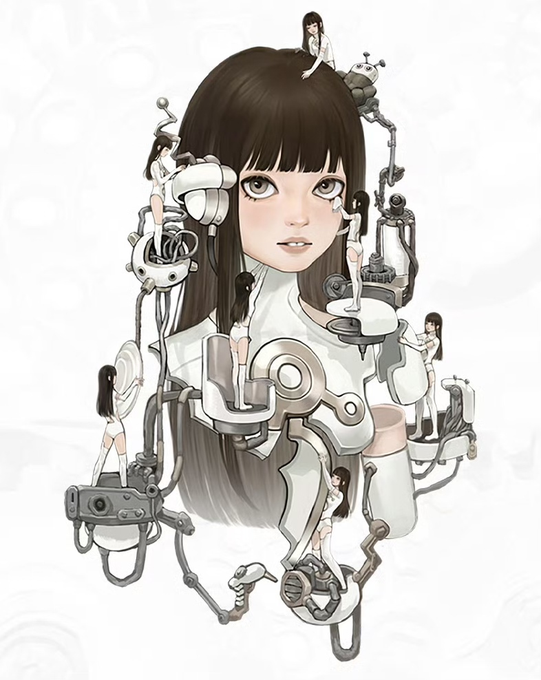

Many people remember my translucent mechanical structures, the cold metal lines, and my body pieced together like fragments of dreams when they first see me. They say I'm like a key—futuristic, sharp, and detached.

In fact, I prefer to think of myself as a being in the process of becoming. No fixed form, no preordained ending, and no labels I'll accept from anyone. I wander between reality and the uncharted, swaying between emotion and order. Every state is my truest self in that moment.
I have seen broken light and felt the flowing tides; I freeze in silence and gain insight amid chaos. My mechanical shell is not a cold defense, but the way I converse with the world—gentle yet steadfast, rebellious yet true to my heart.

I do not seek to be anyone, nor do I intend to stay in just one version. I will keep growing, disassembling, and reassembling. I am KeyA. A key to the unknown, and a girl forever on the road, becoming herself.